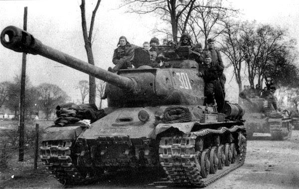
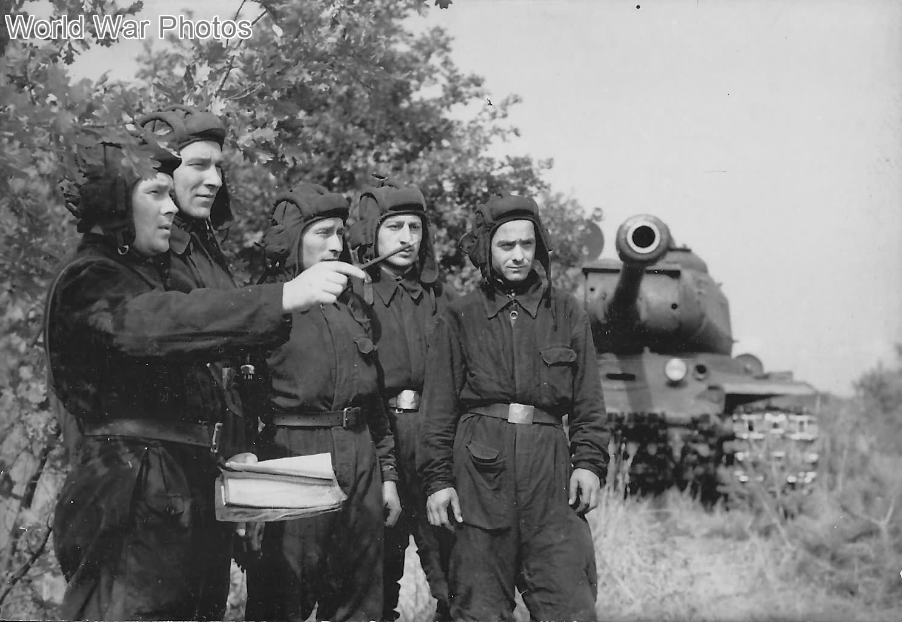
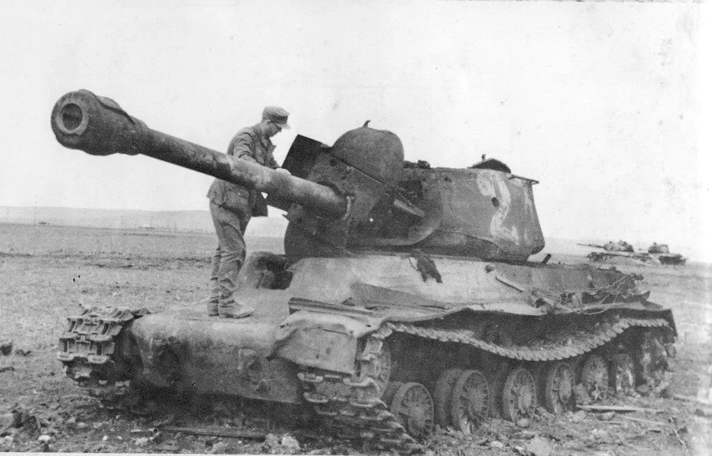
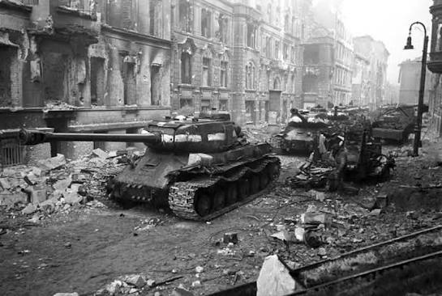
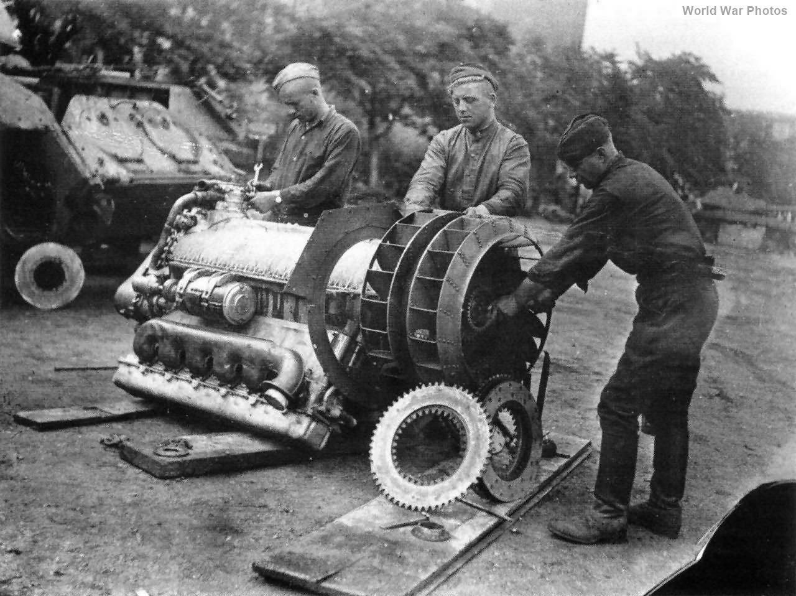

IS-2
Giới thiệu
IS-2 (Iosif Stalin-2) là xe tăng hạng nặng chủ lực của Liên Xô trong giai đoạn cuối Thế chiến II. Xe được thiết kế nhằm đối đầu trực tiếp với các mẫu Tiger I và Tiger II của Đức, đồng thời hỗ trợ bộ binh khi tấn công các vị trí phòng thủ kiên cố.
Điểm nổi bật nhất của IS-2 là pháo 122 mm D-25T có sức công phá rất lớn, không chỉ hiệu quả trước xe tăng mà còn có khả năng phá hủy lô cốt, công sự và các mục tiêu kiên cố.
Lịch sử phát triển
Kinh nghiệm từ các trận đánh với Tiger I cho thấy Liên Xô cần một mẫu xe tăng hạng nặng mới có giáp tốt hơn và hỏa lực mạnh hơn dòng KV. Từ đó, dòng IS (Iosif Stalin) được phát triển và IS-2 trở thành phiên bản được sản xuất với số lượng lớn nhất.
Từ năm 1944, IS-2 tham gia nhiều chiến dịch lớn của Hồng quân, góp phần quan trọng trong cuộc tiến công vào Đông Âu và Berlin.
Thông số kỹ thuật
| Quốc gia | Liên Xô |
|---|---|
| Tên đầy đủ | IS-2 (Iosif Stalin-2) |
| Loại | Xe tăng hạng nặng |
| Khối lượng | Khoảng 46 tấn |
| Kíp lái | 4 người |
| Động cơ | Diesel V-2-IS V12 |
| Công suất | 520 mã lực |
| Tốc độ tối đa | Khoảng 37 km/h |
| Tầm hoạt động | Khoảng 240 km |
| Giáp | 20–120 mm |
Vũ khí
IS-2 được trang bị pháo 122 mm D-25T, một trong những loại pháo xe tăng có cỡ nòng lớn nhất được sử dụng trong Thế chiến II. Loại pháo này có sức công phá cực mạnh, đủ khả năng xuyên giáp các xe tăng hạng nặng của Đức ở khoảng cách phù hợp và đặc biệt hiệu quả khi tấn công công sự, boong-ke và các mục tiêu kiên cố.
- Pháo chính: 122 mm D-25T.
- Cơ số đạn: khoảng 28 viên.
- Súng máy DT 7,62 mm đồng trục.
- Súng máy DT 7,62 mm phía trước thân xe.
- Súng máy phòng không DShK 12,7 mm trên nóc tháp pháo (từ cuối năm 1944).
Ưu điểm
- Pháo 122 mm có sức công phá rất lớn.
- Giáp trước dày và có góc nghiêng tốt.
- Động cơ diesel đáng tin cậy.
- Hiệu quả khi tiêu diệt xe tăng và công sự.
- Độ cơ động khá tốt so với xe tăng hạng nặng cùng thời.
Nhược điểm
- Tốc độ bắn chậm do đạn hai phần.
- Cơ số đạn mang theo khá ít.
- Tầm quan sát không bằng một số xe tăng Đức.
- Độ chính xác ở cự ly rất xa thấp hơn pháo 88 mm KwK 43.
- Không gian chiến đấu bên trong tương đối chật.
Các trận đánh tiêu biểu
Budapest (1944–1945)
IS-2 được sử dụng để phá vỡ các tuyến phòng thủ kiên cố quanh Budapest. Hỏa lực mạnh của pháo 122 mm đặc biệt hiệu quả khi yểm trợ bộ binh trong chiến đấu đô thị.
Berlin (1945)
Trong trận Berlin, IS-2 là lực lượng thiết giáp hạng nặng chủ lực của Hồng quân. Xe được dùng để phá hủy công sự, chốt phòng thủ và hỗ trợ các đơn vị bộ binh tiến vào trung tâm thành phố.
Chiến dịch Mãn Châu (1945)
Sau khi chiến tranh tại châu Âu kết thúc, IS-2 tiếp tục tham gia chiến dịch tấn công đạo quân Quan Đông của Nhật Bản tại Mãn Châu, góp phần vào chiến thắng nhanh chóng của Liên Xô ở mặt trận Viễn Đông.
Đánh giá tổng quan
IS-2 là một trong những xe tăng hạng nặng thành công nhất của Liên Xô trong Thế chiến II. Xe kết hợp giữa giáp bảo vệ tốt, động cơ đáng tin cậy và hỏa lực cực mạnh, đủ khả năng đối đầu với Tiger I và Tiger II.
Mặc dù tốc độ bắn chậm hơn các xe tăng Đức do sử dụng đạn hai phần, IS-2 vẫn chứng minh hiệu quả rất cao trong cả tác chiến chống tăng và yểm trợ bộ binh. Đây được xem là một trong những biểu tượng của lực lượng thiết giáp Liên Xô trong giai đoạn cuối chiến tranh.
Thư viện ảnh



